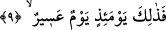

9. İşte o gün zorlu bir gündür.
Bunun anlamı; iş kâfirlere azap ve kötü hesap açısından zor gelir. O gün böylesine zor
bir gündür. Bu ifâde sûra üfürülme gününe işâret etmektedir. Bu günün böylesine zor bir
gün olduğuna; “kâfirler için de pek çetin bir gündür o.” (el-Furkan, 25/26) âyet-i
kerîmesi de işâret etmektedir. Burada sanki şöyle denmiş olmaktadır: O sura üfürülme
günü kâfirler için zor bir gündür.
10. Kâfirler için (hiç de) kolay değildir.
Âyette yer alan “kolay değildir” anlamına gelen “ğayru yesir” ifâdesi o günün zor bir
gün olacağını pekiştirip ve güçlendirmektedir. Eğer bu son ifâde kullanılmış olmasa idi
o günün zorluğu -belki- bir yönden zor olmakla birlikte bir başka yönden zor
olmayacağı ihtimalini ifâde etmiş olurdu. Şimdi bu pekiştirme getirilince o günün
kâfirlere hiçbir yönden kolay olmayacağı ifâde edilmiş olmaktadır. Bu ifâde aynı
zamanda bu günün müminlere kolay olacağına da işâret etmektedir. Burada kasdedilen
gün, bütün herkesin yeniden canlanacak olduğu sur’a ikinci üfürüş günüdür. Çünkü
bütün kâfirlere zorluğu söz konusu olan bu ikinci üfürüştür. Sura birinci üfürüldüğü
esnâda canlı olan herkes içindir. Rivâyetlerde yer aldığına göre surda bütün ruhların
sayısı kadar delik vardır ve ruhlar sura ikinci kez üfürülme esnâsında bu deliklerde
toplanacaklar ve tam üfürülme gerçekleştiğinde her bir delikten bir ruh çıkıp âid olduğu
ve alındığı cesedine geri dönecektir. Böylece o cesed Allah’ın izniyle canlanacaktır.
Nitekim Peygamber (s.a.) Efendimiz bir hadis-i şerifte şöyle buyurmuştur: “Nasıl rahat
olayım ki! Sura üfürecek melek suru ağzına almış üfürülmesi için ne zaman emir
verilecek diye bekliyor.” Kendisine; “o gün biz nasıl davranacağız, ne yapacağız? diye
sorulduğunda Peygamber (s.a.) Efendimiz: “Hasbunallah ve ni’mel vekil/Bize Allah
yeter, o ne güzel vekildir” [184] deyiniz cevabını vermiştir.
Kâşânî bu âyet-i kerîmeyi şöyle anlıyor: “Sur’a üfürüldüğü zaman” yâni dirilmiş
olan bedene üfürülür ve kişiyi azâba götürecek ve cehenneme sürükleyecek kötü
hey’etler, biçimler ya da sevap kazandıracak ve kurtuluşa erdirecek güzel sûretler oraya
nakşedilir. Bu günün mahcuplara (mahrumlara) zor bir gün olacağı hiç kimsenin gizlisi,
saklısı değildir. Her ne kadar o günün mahcuplar dışındakilere kolay bir gün olacağı
gizli olsa da. Ancak keşif ve ıyan ehli olup tahkik derecesine ermiş olanlara bu da gizli
ve saklı değildir.